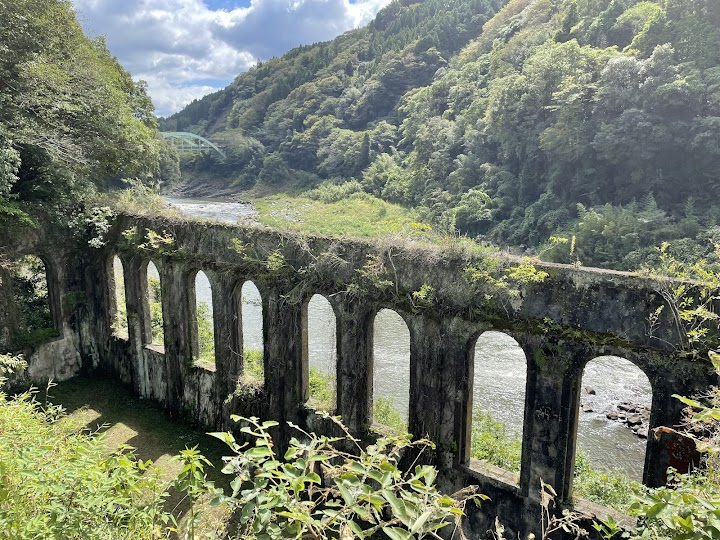
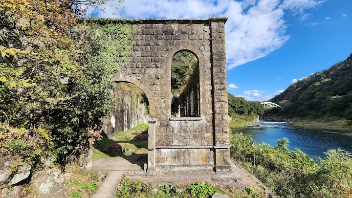
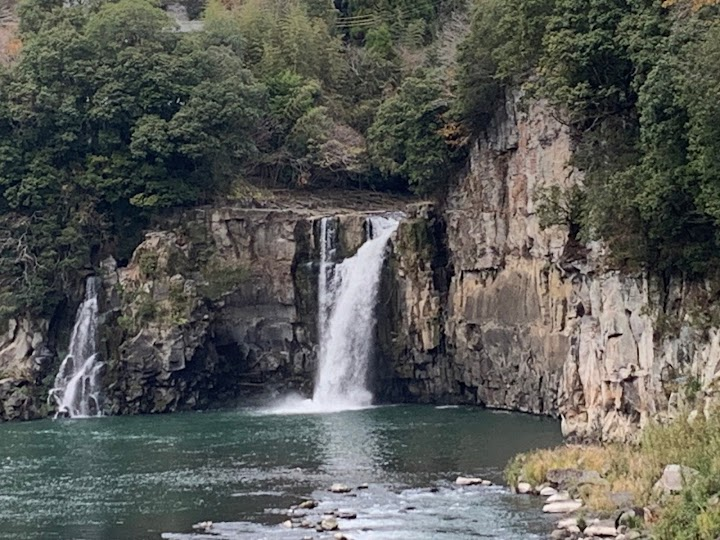
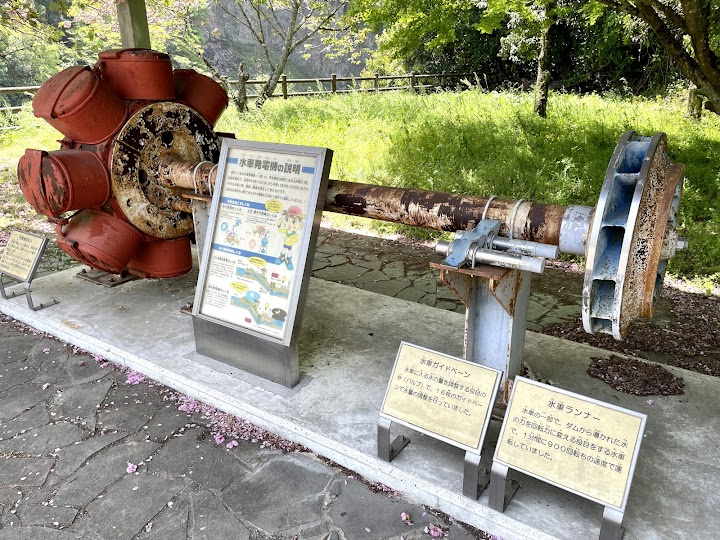
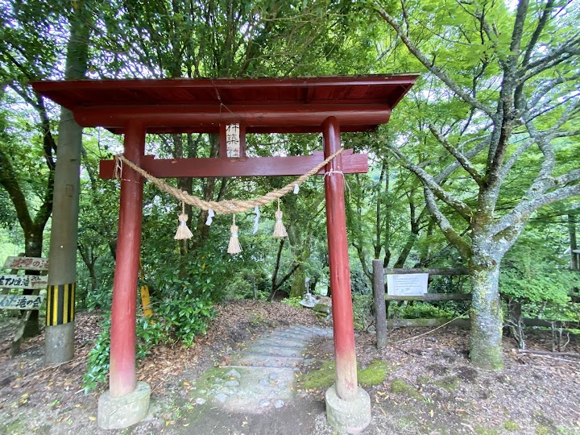

Chinda Falls
Chinda Falls is a broad cascade over a river cliff in a forested valley, with remains of an early-1900s power plant beside it. The walk is short and easy.
Open in Google Maps (street view, more photos and reviews there)






Visitor tips on finding it and getting there
It is a hidden gem that absolutely deserves a visit! Of course, the waterfall itself is breathtaking! The sound of cascading water and the lush greenery surrounding it create a perfect serene environment. There's a big wooden hut with a perfect view of the falls where you can rest or enjoy some snacks. It’s a great spot to relax, take in the scenery, and snap some beautiful photos. Free Parking and Lavatory facility (not so new) available. Chinda Falls is a perfect day-trip destination for nature lovers. Highly recommended!
This waterfall site actually has two waterfalls, the main river and then a side stream that flows into it. Many years ago there was a damn and power plant, but the power plant is long gone and the waterfalls have been partly restored, so they definitely have scenic beauty. It's about a 5-minute walk from the parking lot to the closest overlook of the large waterfall. There is a public restroom, although there are no other services. The area is quite relaxing and it's off the beaten tourist path, so if you're passing through and looking for a place too relax and have lunch, this might be a good